"Dark, raging waves shatter across the bow of an old galleon as it approaches the rocky shoals of the
pirate port. Its wooden hull covered in algae and barnacles; its sails torn and tattered by the merciless winds;
its ropes and boards creaking from their strains; its men worn and wounded, beaten and broken by the very life they chose...
Yet, the ship stays afloat. The hull leaks not a single drop. The wind still strikes the tattered sails.
The boards and ropes still hold... And the men sail on, drinking, laughing and enjoying their free life until the day
they meet their horrible demise in the murky waters of Krakenfall..."
Krakenfall is a large island made up of steep cliffsides and razor-sharp rocks, an unfriendly
environment populated by the worst of the worst. Located in the middle of the Arcadian Ocean, the port is
surrounded by numerous islands ready to be explored, terrible beasts to be slaughtered and wealthy
merchants to be raided in the pursuit of wealth and glory.
THE DREAD CREWS
Though there are hundreds of criminal gangs roaming the bloodsoaked
beaches of Krakenfall, the port is ultimately ruled over by the six Dread Crews - massive
gangs of pirates, each one with their own goals, ideals and a fleet of ships commanded by a
powerful leader known as a Dread Lord.
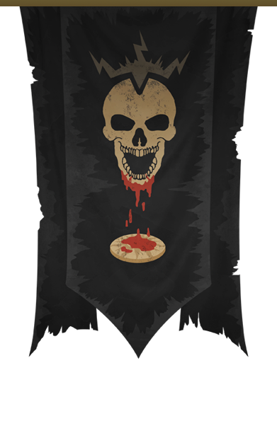
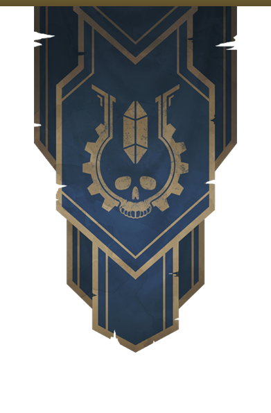
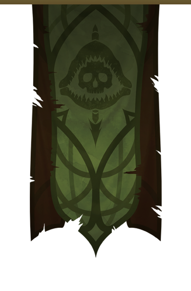
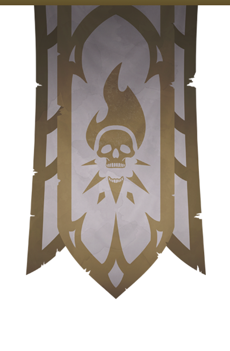
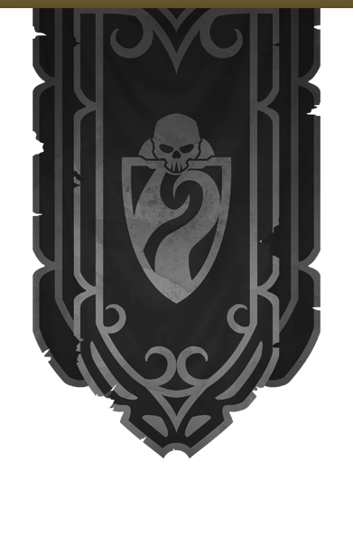
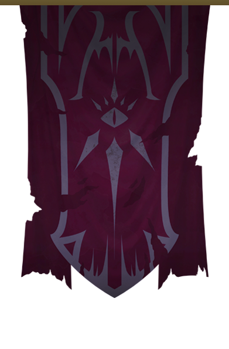
◆
Golden Storm Raiders
The most powerful of all the crews, their success comes
entirely from their complete lack of morality and care for anyone other
than themselves
...
. The Golden dogs don’t just raid merchant ships, they kill,
torture and devastate their target, leaving behind a horrifying nightmare
for the few survivors that are left to tell their story. They take no prisoners,
don’t accept surrender and leave behind a trail of blood so vile and despicable
it haunts the nightmares of even the sturdiest sailors.
◆
The Arc-Tech Order
The Order takes pride in their discipline, honor and morality, even
as pirates. Most of the sailors that join the Order are either there to take
...
revenge on the Imperial navy that wronged them or to continue their research,
uninterrupted by zealous fanatics that so often deem it heretical. Some call
them mad scientists due to their disregard for the consequences their technology
bares on the world, but the Order is convinced that their
research helps drive humanity forward from an unending age of technological
stagnation.
◆
The Slaughterdock Butchers
One of the most favored crews on Krakenfall, the
Butchers are as friendly and social as they are skilled and dedicated to their work.
Rarely resorting
...
to theft, they take great pride in “the hunt” and decorate both
their ships and their clothes with trophies from the monsters they’ve slain.
When they’re not out on the ocean hunting the many horrors that stalk Arcadia,
they can be found in taverns, eating, drinking and having fun to the sounds
of loud music and cheering.
◆
The Spellborn Bastards
Much like all the other crews, the Spellborn Bastards started off as a
band of brigands, robbing and pillaging. Their motivation, however, was
...
drastically different. After witnessing the Eastern Empires misuse, abuse or melt down
powerful magic items they would deem heretical, the Spellborn made it their task to hunt
down and steal any magical artifact they can find,
with the purpose of protecting them from destruction and misuse.
◆
The Krakenfall Blackguard
To get a bunch of bloodthirsty savages and criminals
in line, it takes a lot more than a stern look and a set
of laws. Those in charge of punishment and
...
debt collection have to be more than
just human, their very presence has to terrify even the most stalwart and fearless
of pirates.
The Blackguard aren’t just human, they’re tethered souls, undead
entities bound to the will of the Ferryman, immortal specters cursed for all
eternity to punish the backstabbers and mutineers of Krakenfall, just as they
were once punished for those very crimes.
◆
The Damned Legion
The remnants of what use to be Krakenfall’s most
notorious crew, the spawn of Hannibal, cut down to only a few dozen after the Great
mutiny, the
...
Damned Legion is a guild of vampires, liches, ghosts, necromancers, and
wraiths; the world’s undead elite. A crew of death, and the first-ever Dread Crew,
they use to number in thousands, but are now confined to their dark cathedral with
only a handful of leaders, each with a few dozen minions at their side.
KRAKENFALL STORIES
Explore the history of Krakenfall through several comics featuring
some of the most important figures involved in the founding and expansion of the pirate
port, all of which play a major role in the future of Krakenfall and the quests provided
by the adventure book.
With two main regions separating the Arcadian ocean between pirate and
imperial territory, Krakenfall lets you explore more than 5 different
areas, totalling over 20 unique locations, each with their own detailed
descriptions and quest hooks.
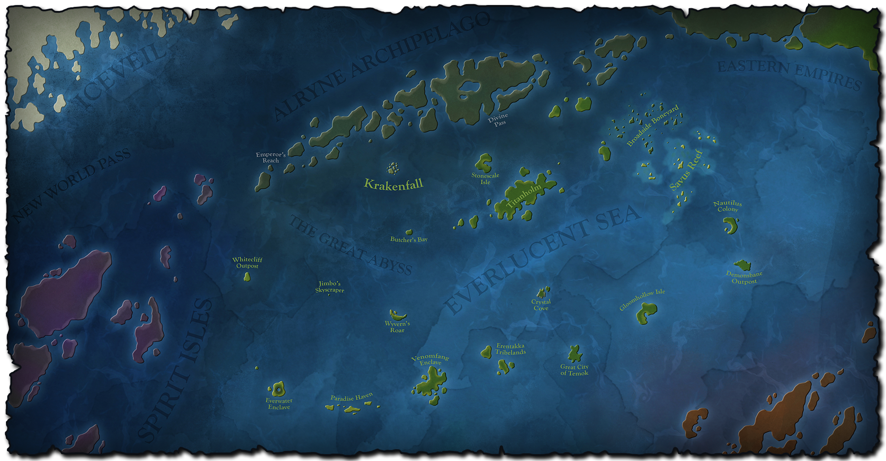
The Everlucent Sea
Standing in the middle of the Arcadian Ocean,
the Everlucent Sea is unquestionably treacherous and deadly, yet also eerily calm
and beautiful. Covered in warm sandy beaches, lush jungles and faint glimmers of
civilization, the Everlucent is home to countless exotic beasts, deep jungle temples,
and cursed treasures, with roaming gangs of Krakenfall pirates around every isle and atoll.
The Alryne Archipelago
To the north of the Everlucent lie the Imperial waters of the
Alryne Archipelago. With towering obsidian cliffs, cloud-piercing ironwood forests,
and massive active volcanoes, the region is the last Imperial bastion in the Arcadian
ocean, where savage raider tribes, pirates and Imperials battle for control over the
valuable New World Pass and burried ruins of a long lost civilization of Giants.
ARCADIAN BESTIARY
Filled to the brim with danger, Arcadia is home to many deadly beasts, both
natural and unnatural. From the deepest depths to the highest cliffs, monsters roam the lands,
dozens of which are recorded in the Krakenfall bestiary, a few of which you can check out here:
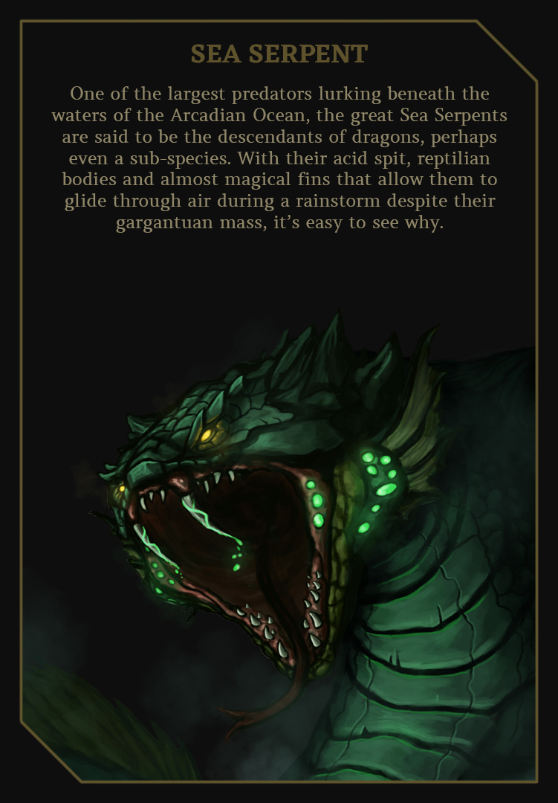
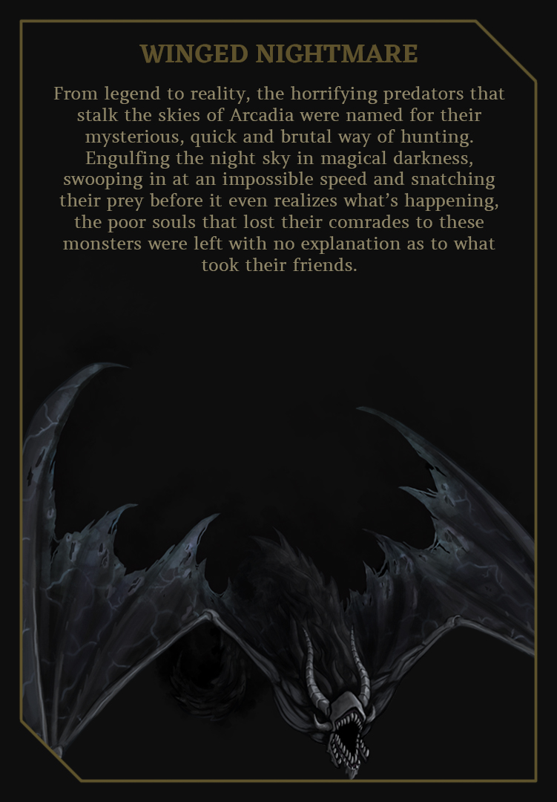
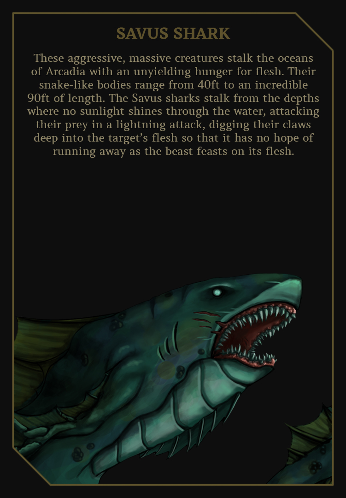
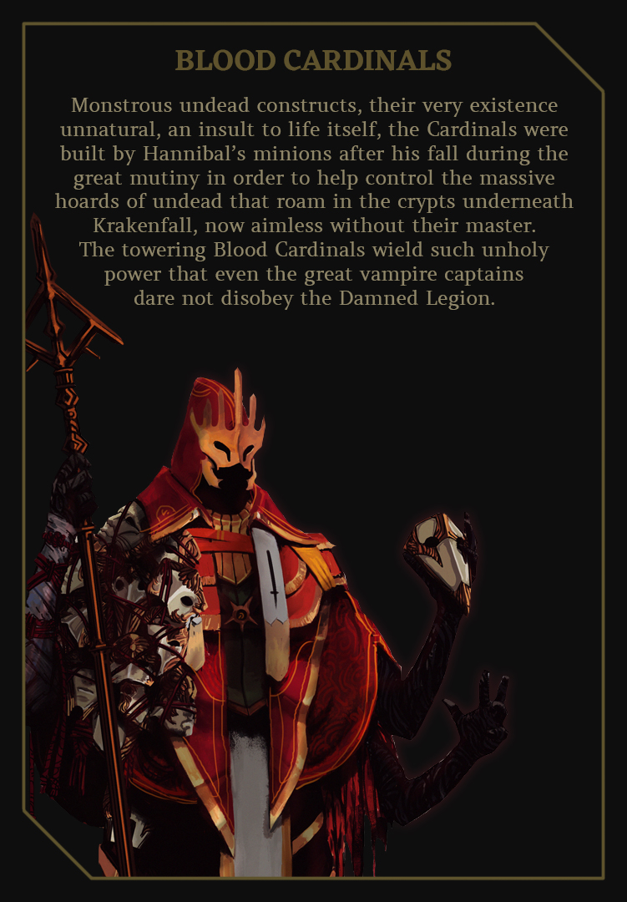
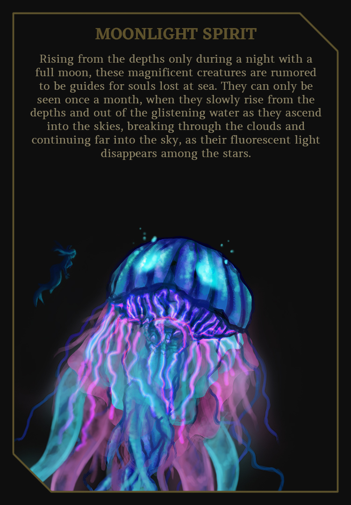
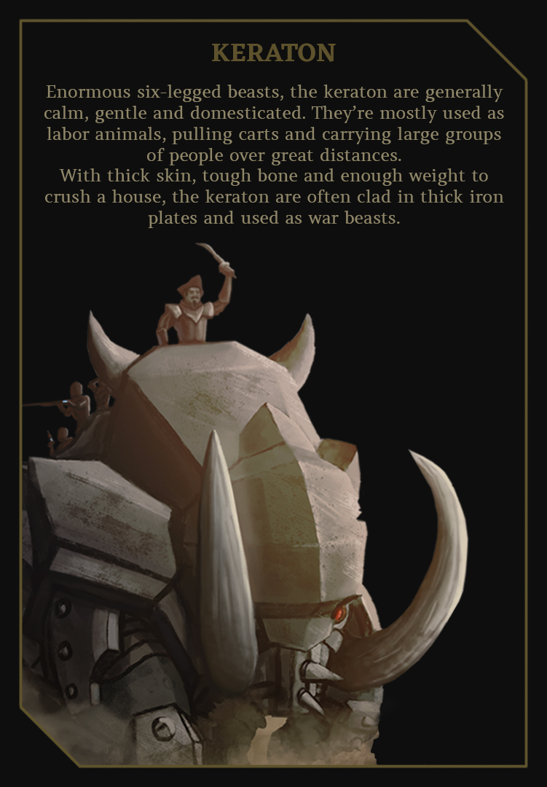
FLOATING FORTRESSES
Every good crew needs a good ship - and a tiny wooden sloop with
moldy cloth sails and unreliable cast-iron cannons just won’t do! To become infamous,
feared and respected among pirates, you will need a vessel that strikes fear into the
hearts of your prey, or perhaps one that commands respect by its very presence.
As Krakenfall and the surrounding oceans are filled to the brim with exotic creatures
and materials infused with arcane energy to push beyond the limits of reality, its
only natural to claim those resources and use them to upgrade the floating fortress
you get to call home. A ship isn’t just a vessel, its a base
of operations, and should be treated as such. It’s your home, your vault of treasure,
your armory, as well as your weapon of mass destruction.
Krakenfall provides a variety of choices for ship customization, which include:
SHIP CLASS
From the smallest of sloops to towering dreadnaughts, each ship
has its own class which determines its size, weight, number of masts, sails and
cannons, as well as the number of people needed to properly sail it.
HULL MATERIALS
While regular wood is nice and sturdy, the sailors of Krakenfall
prefer to make their vessels out of enchanted Elderwood, cursed Ash'Tek obsidian,
monstrous chitin or even elemental dragonscale.
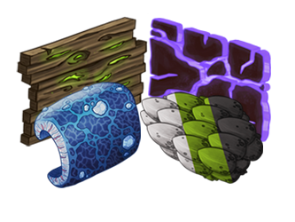
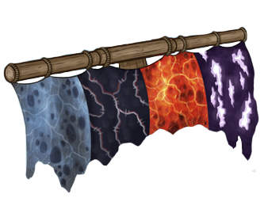
SAIL MATERIALS
When it comes to sails, the magic-infuesed hide of the
storm-gliding Sea Serpents, the terrifying Winged Nightmares and even elemental Dragons
make for some of the fastest ships on the ocean, if a crew is skilled enough to slay these
legendary beasts.
SHIP ARMAMENT
The primary tools of warfare for all pirates and sailors of Krakenfall,
a ship is only as dangerous as the armament it holds on-board. Though cast-iron cannons
are effective, they are easily outmatched by runic, or even Arc-Tech artillery.
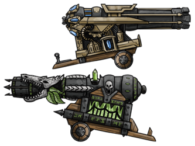
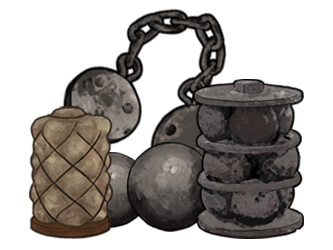
CANNON AMMO
The most versatile weapon in naval warfare is the ammo the ship's cannons
use. Whether it's a regular cannonball to target the enemy hull,
grapeshot to target their crew, or chain-shot to cripple their masts and sails, the right
use of ammo can mean life and death.
Krakenfall also provides a full customization sheet and pricing list so that any crew
can quickly shop for different ship parts, or build an entirely new ship from scratch!